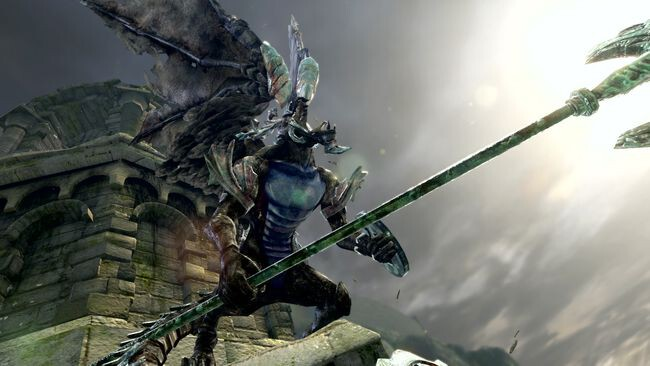
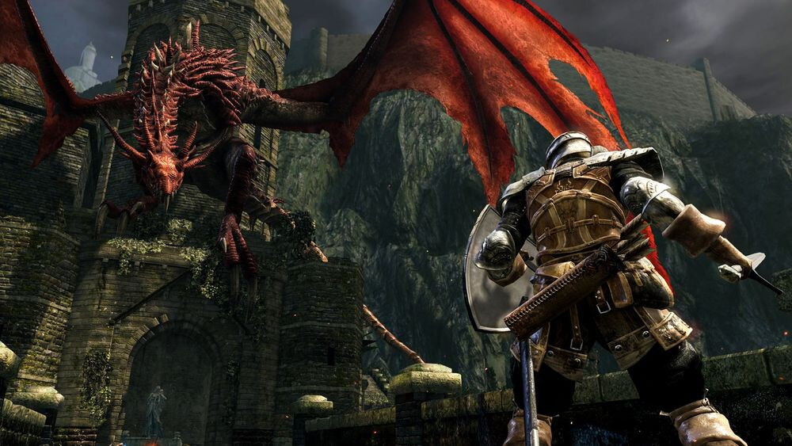

Si te gusta Elden Ring y quieres probar ahora un Dark Souls, estas son las diferencias que debes conocer del clásico de FromSoftware
Cuando un videojuego se hace popular, lo lógico es que te pique la curiosidad por probar los trabajos anteriores de esa compañía. Y si te has adentrado por primera vez en un Soulsborne con el espectacular Elden Ring, es probable que ahora quieras hacer lo propio con un Dark Souls, estando muy a tiro su remasterización.
Tenemos que advertirte: si te han parecido duras las Tierras Intermedias de Elden Ring, la supervivencia en el universo de Lordran de Dark Souls te parecerá mucho más hostil, en parte por no contar con varias de las facilidades del nuevo éxito de FromSoftware con ventas millonarias y alta probabilidad de conseguir el GOTY.
Qué tuvo de especial el primer Dark Souls de 2011

Dark Souls no fue el primero, sino que todo comenzó con Demon's Souls. Y eso que parte de su espíritu se empezó a gestar mucho antes, con la saga King's Field de FromSoftware, como recordamos en varias ocasiones. Pero sin lugar a dudas el primer Dark Souls popularizó la fórmula del Demon's Souls de 2009 para PS3.
Cuando se dice que un juego es "en plan Souls" no significa que sea difícil, sino que entraña una serie de mecanismos especiales que no han parado de copiarse desde hace una década con mayor o menor fortuna, teniendo en los Nioh de Team Ninja uno de sus alumnos más destacados al aportar su propio sello a mayores.
¿A qué nos referimos exactamente? Para empezar, por lo básico. Ausencia total de mapa. Para un RPG esto fue una propuesta de lo más arriesgada, pero que se comprende a la perfección si entendemos la particular idiosincrasia de su universo. Es un tipo de juego pensado para morir muchas veces, con cierto componente de "ensayo y error" incluso aunque seas paciente contra los jefes, porque tardarás en pillarle el truco a cada patrón de ataque y a medir bien los tiempos. Sí, esto no se diferencia de Elden Ring, salvo por lo expuesto del mapa.
Lo sorprendente es que esa ausencia total de una guía para indicarnos por dónde ir, forzaba a que nuestro cerebro memorizase sin demasiado esfuerzo el mapa de cada región de Lordran. ¿El truco? Un diseño exquisito donde nada estaba al azar y siempre con una identidad propia desbordante. Y es que por mucho que nos fascinen las Tierras Intermedias, hay patrones que se repiten, algo perdonable si tenemos en cuenta la desmesurada extensión del mapa y con muchos secretos en sus profundidades. En Dark Souls cada zona es 100% original. Y lo curioso es que todas están conectadas de algún modo u otro mediante atajos especiales, otro de los sellos de identidad de todo Souls que se precie. El problema es que Dark Souls era menos generoso con las hogueras (el equivalente a las zonas de Gracia), por lo que morir pesaba bastante más al tener que rehacer más trayecto hasta el jefe.
De hecho, una losa importante era que no se desbloqueaba el teletransporte entre hogueras hasta casi el final de la historia. Y esto, quieras o no, te forzaba más si cabe a memorizar cada escenario, no solamente a base de morir y repetir... Hoy ya no parece tan inmenso en cuanto a sus dimensiones, pero tampoco se le puede quitar ningún mérito al respecto al lograr que cada viaje fuese una experiencia.
Por otro lado, donde no hay cambios entre Dark Souls y Elden Ring y que siempre se asocia a la requete-manida frase de "juego en plan Souls" es en relación a la regeneración de los enemigos al descansar en la hoguera/Gracia, el hecho de perder todas las almas/runas al morir, que el proceso de curarse no sea inmediato como en un Diablo sino que tarda entre uno o dos segundos, o que la forma en la que evolucionas a tu personaje es más rácana que cualquier Fire Emblem de Nintendo al sumar un único punto (para un atributo a tu elección) por cada nivel.
Más diferencias respecto al nuevo Elden Ring

Semanas atrás hablamos con detalle sobre el tutorial de Elden Ring. Pues bien, en Dark Souls no hay tutorial opcional porque ni siquiera lo tiene. Sí que tiene un comienzo algo permisivo dentro del refugio de los no muertos y con pistas muy básicas sobre los comandos del juego, hasta que te planta contra un jefe que te costará las primeras veces si no conoces el daño crítico por caída o su debilidad contra el fuego. Pero hasta que no lo mates no podrás salir de ahí... Y otro dato a tener en cuenta: tampoco podrás de subir de nivel hasta que no escapes de ahí.
La diferencia más importante respecto a Elden Ring radica en la condición del personaje, puesto que no aparecemos como humanos, sino en el estado hueco. Para recuperar nuestra humanidad hay que usar precisamente el consumible "humanidad", anulando previamente el estado hueco desde la hoguera gastando un punto. El problema es que como humanos nos pueden invadir otras personas. Las Grandes Runas de Elden Ring sirven para otra cosa, como explicamos en guía.
A su vez, al contrario que en el nuevo RPG de FromSoftware, en Dark Souls no se reponen frascos de estus (el equivalente a los viales que nos curan) tras matar a todos los enemigos de una pequeña zona, sino únicamente al descansar en una hoguera. Y para colmo el número varía según lo avivada que esté dicha hoguera.
Lógicamente, Elden Ring fue pionero en el uso de caballo en un Soulsborne, mientras que en relación a la barra de habilidad, este hito se lo debemos a Dark Souls III. No, en Dark Souls las armas no tienen habilidades, aunque sí disponen de cualidades especiales como daños elementales o de estado. La pega es que las armas se "rompen" si agotan su duración, perdiendo un 85% de su poder hasta que se reparan. Sí, The Legend of Zelda: Breath of the Wild es mucho más cruel.
¿Y qué hay de su historia? Es bastante más compleja de seguir al no haber un lugar de "descanso" como tal con los personajes secundarios juntos, sino que todos están desperdigados por Lordran. Y lo que es peor, podrás realizar pactos que son más estrictos, al obligarte a cumplir una serie de reglas para no perder los beneficios del único pacto que puedes tener activo. Sí, tan solo uno a la vez.
A esto hay que sumarle que aquí sí que podrás matar a cualquier NPC, al contrario de lo que sucede en Elden Ring, que dispone de varias zonas seguras donde se bloquean los ataques. Aunque al menos podrás perdonar tus pecados con Oswald de Carim, en la zona inicial de la parroquia de los no muertos, tras matar al jefe.
Hay otras diferencias evidentes, como el cambio de nombres para ciertos parámetros del estado de tu personaje o un sinfín de objetos, por mucho que la mayoría compartan muchas de sus propiedades. El caso es que si te animas a probar ahora un Dark Souls tras jugar a Elden Ring, deberás saber que la experiencia será más dura y cruda, en parte por tratarse de un juego menos accesible con el usuario... con toda la intención del mundo por parte de Hidetaka Miyazaki y su equipo. Pero te enamorarás con su retahíla de momentazos, ojo.
Lo tienes disponible tanto en su versión original para PS3 o Xbox 360, como en su remasterización para PS4, Xbox One, Steam e incluso Nintendo Switch. Que eso de jugar a Dark Souls en portátil (hasta que llegó Steam Deck) es todo un puntazo.
Fuente: VidaExtra